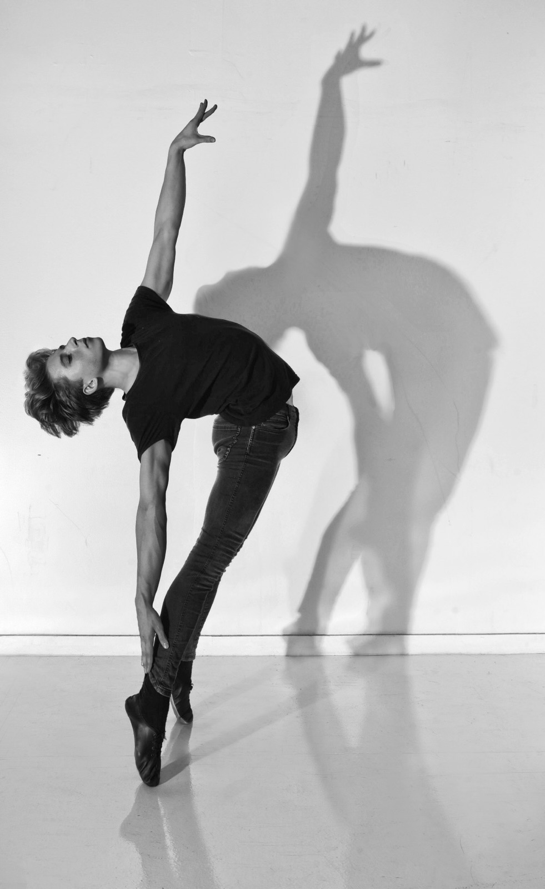
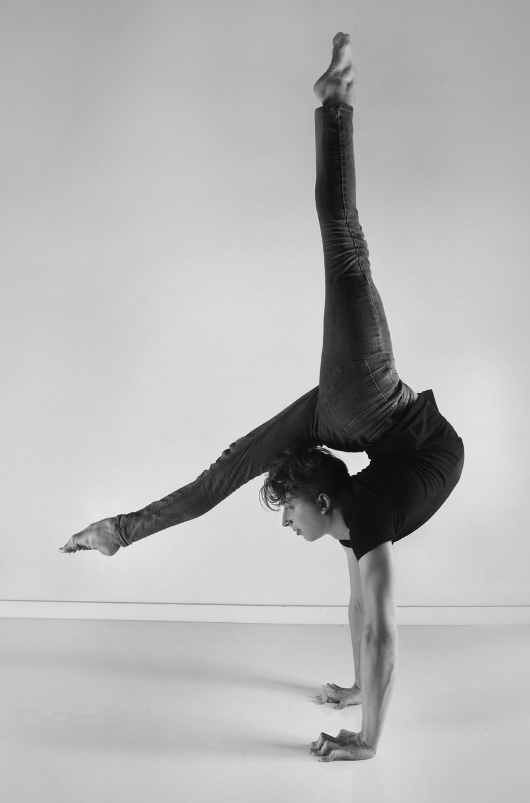
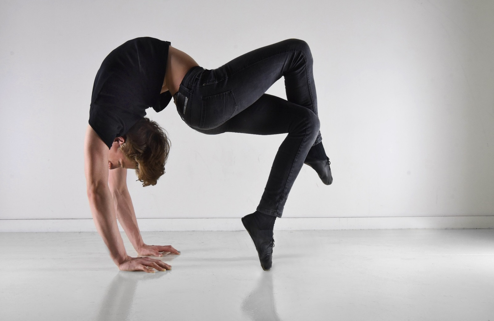
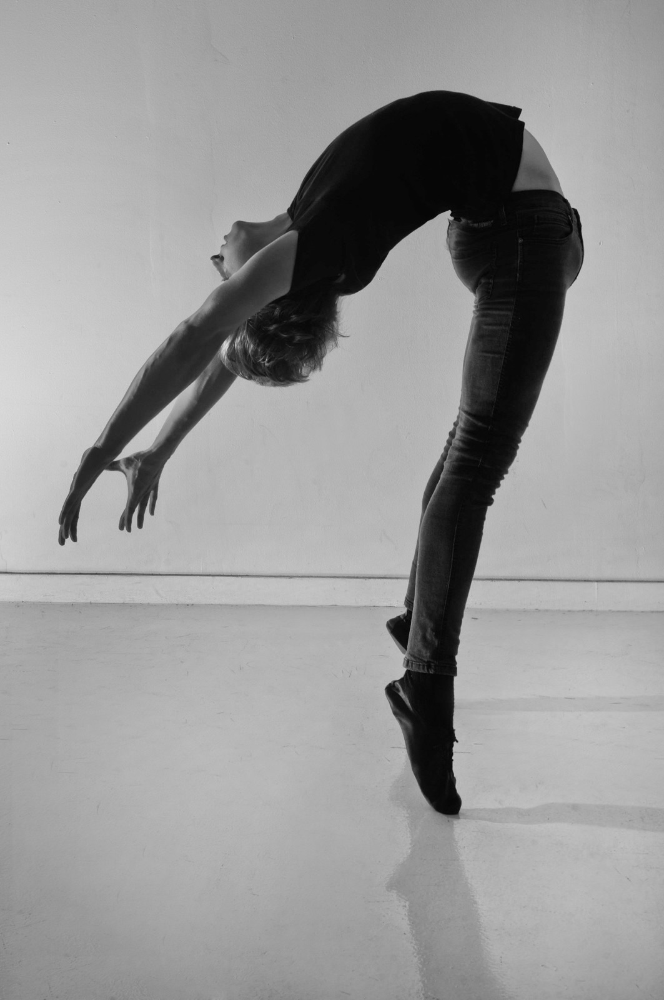
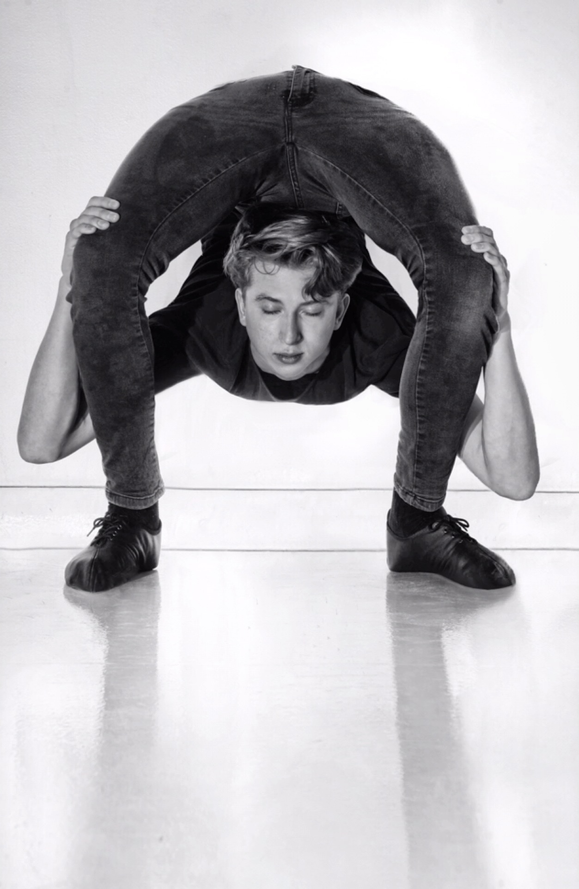
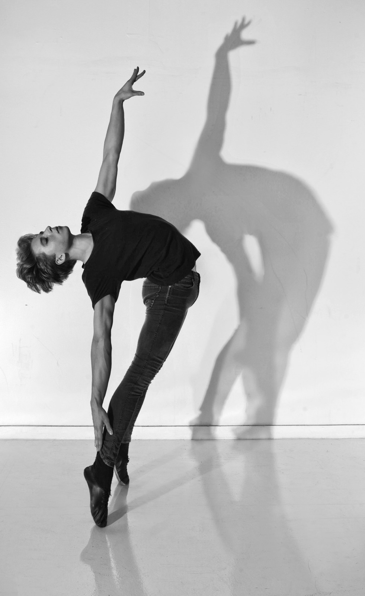
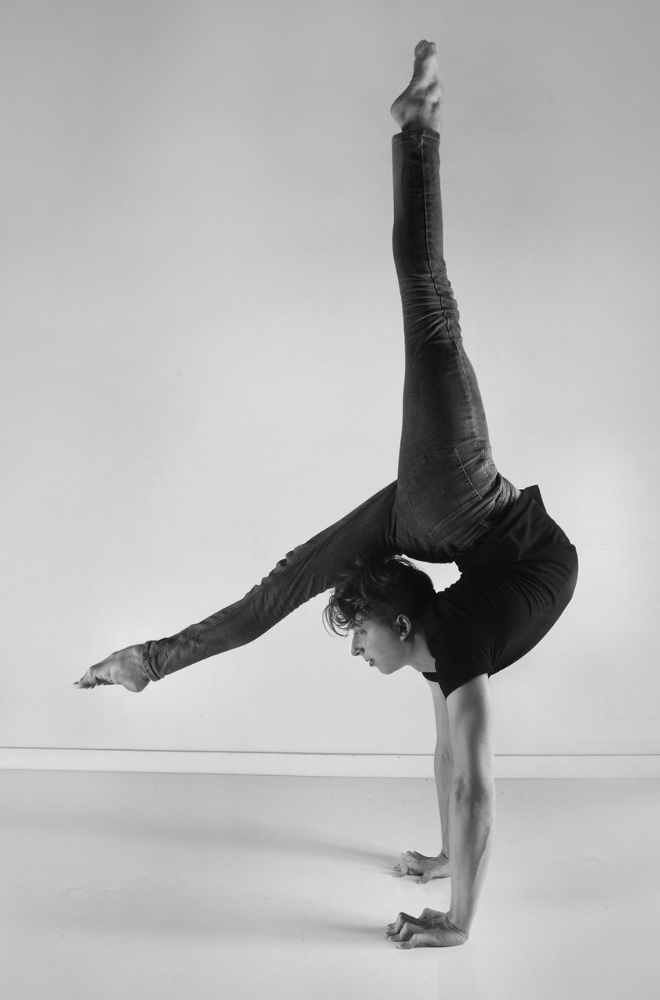
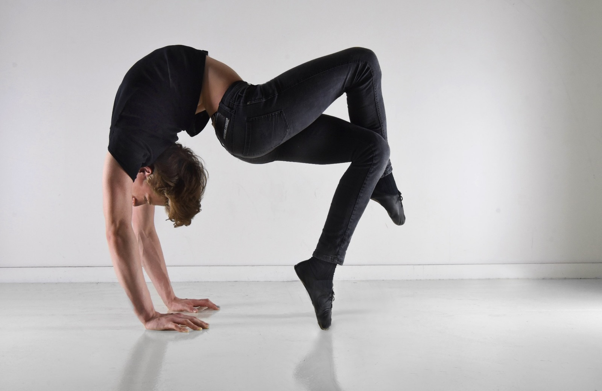
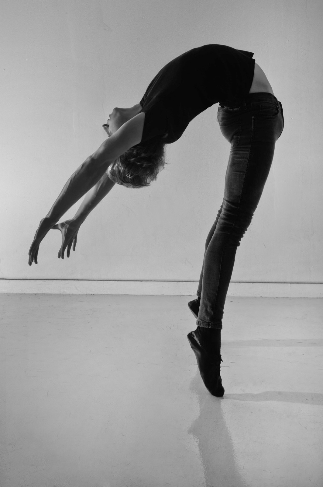
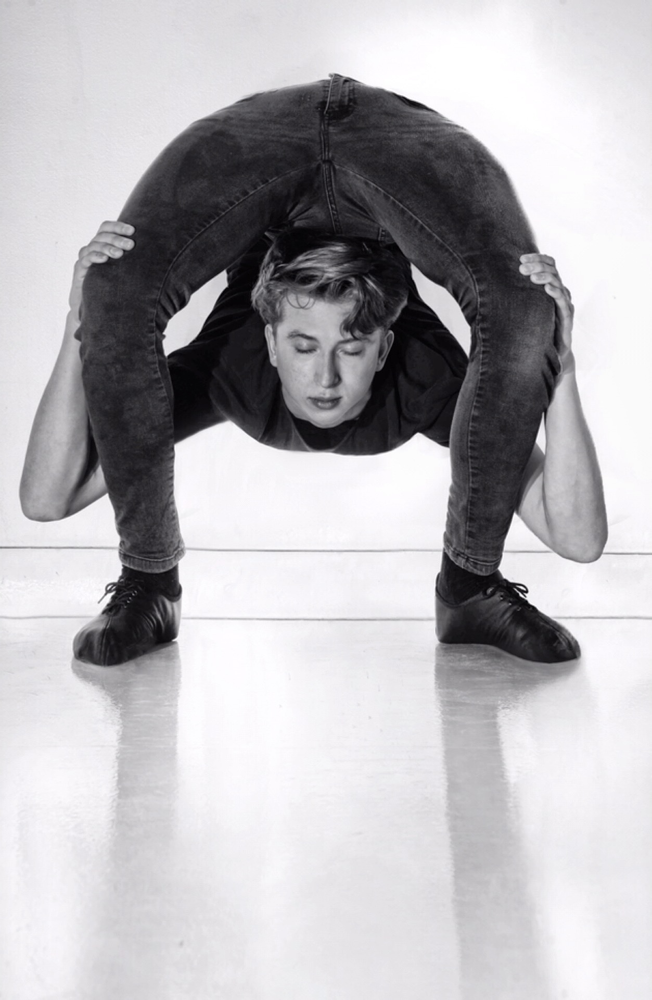

About Me
Maxim Voronin is a magician, contortionist, actor, model, and juggler. He is also a stage director and consultant.
Born in San Francisco, California, Maxim was immersed in the world of cabaret and theater from an early age. As a second-generation artist, he followed in the illustrious footsteps of his parents, Yevgeniy Voronin, a world-class magician, and Svetlana Perekhodova, a one-of-a-kind contortionist. In 2022, Maxim graduated with honors from the College program at the Kyiv Municipal Academy of Variety and Circus Arts earning distinction as a stage director and circus artist. He apprenticed under the renowned magician Johnny Thompson (Tomsoni & Co.) and spent four years learning from his father's magic teacher, Alexander Titarenko.
Maxim has performed in movies like Slava The Dog and Magic Hands of Chance. You can also see him on TV shows like Tu Si Que Vales and The Gong Show. He has also modeled in fashion shows across Europe, Eastern Europe, Asia, and the USA.
By the age of 19, Maxim Voronin had already directed and co-produced "History of Magic", the most acclaimed and successful magic show in Ukraine, alongside Vladimir Koshevoy. To date, Maxim has performed internationally and founded his own entertainment company. With his extensive experience in the arts, he promises to deliver an unparalleled show that captivates and amazes audiences.
Education
In 2022, Maxim completed the full college course at the Kyiv Municipal Academy of Variety and Circus Arts, receiving two bachelor diplomas with honors in:
- Culture and Arts (Performing Arts)
- Culture and Arts (Directing of Variety, Theatrical Spectacle and Circus)
See below resume
“The Magic Castle” in The Academy of Magical Arts | Comedy Magic
July 2017
"Dream On"/"Hotel L'Amour"/"Love, Chaos, and Dinner"/"Decadent Delights" in Teatro ZinZanni | Artist
June 2015 - September 2019
“Iншi” in Palats Ukraina | Contortionist
February 2021 - August 2021
“Iншi - History Of Magic” Congress Hall in President Hotel | Director
September 2021 - February 2022
“The Gong Show” in ABC Network | Contortion with Magic
August 2018 – August 2018
“Young Stage Festival” in Basel, Switzerland | Contortion with Magic
April 2022
“IBM and SAM Magic Convention” in Kentucky Performing Arts | Comedy Magic
July 2017
“Comediada Clown Festival” in Theater House of Clowns Odessa | Comedy Magic
April 2013, November 2021
“IBT - Dracula Ballet” in Meydenbauer Theatre, Bellevue | Contortion with Magic
October 2022
“The Ship, Where The Light Lives” in Theaterschiff Potsdam | Contortion, Diabolo, Magic
September 2022 - October 2022
“Varietéspektakel – Café des artistes” in Pantheon Theater | Contortion with Magic, Diabolo
August 2022
“Slava The Dog” in Germany | Acting
2023
“Paraiso – Cirque Bouffon” in Musiktheater im Revier Gelsenkirchen | Contortion
April 2023
“Desert Myth – Flynn Creek Circus” touring California and Oregon | Contortion with Magic, Contortion
June - October 2023
“Weihnachtscircus Aachen” in Aachen, Germany | Contortion with Magic, Levitation
December 2023
“Sun World Ba Na Hills - All Stars” in Da Nang, Vietnam | Contortion with Magic, Magic, Contortion
April - September 2024
“Tu Si Que Vales” in Rome, Italy (Channel 5) | Contortion With Magic
July 2024
“IBT - Dracula Ballet and Nutcracker” in Meydenbauer Theatre, Bellevue | Magic and Dance
October - December 2024

 








